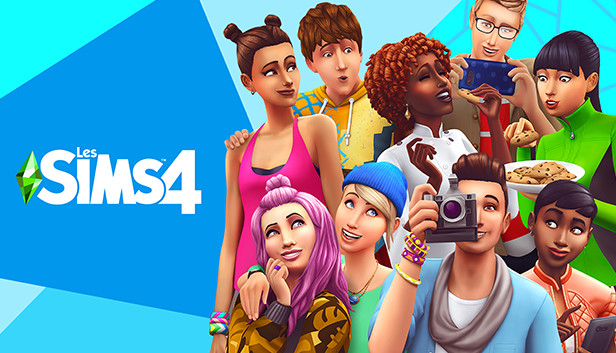
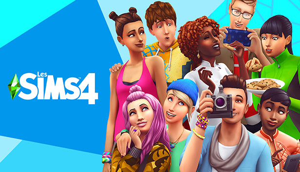
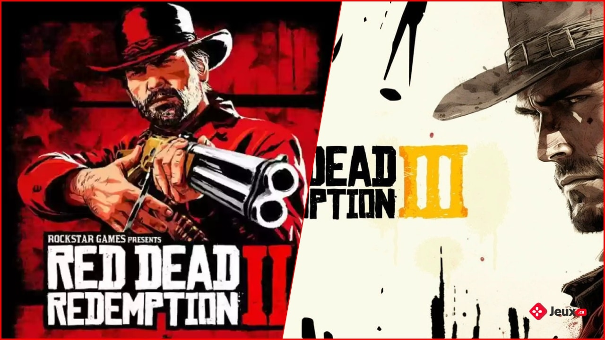
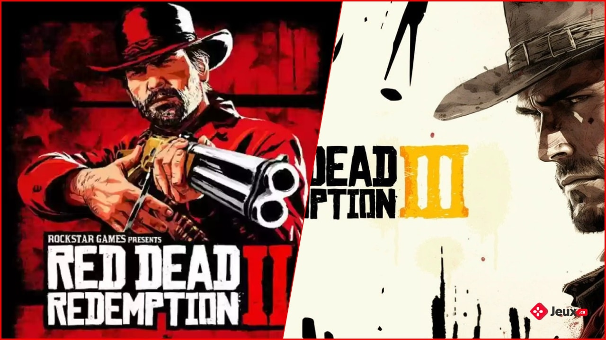

Simulation
Plongez dans un monde où chaque choix façonne votre destinée : votre aventure, votre stratégie, votre réalité ! 🌍🎮
Plongez dans un monde où chaque choix façonne votre destinée : votre aventure, votre stratégie, votre réalité ! 🌍🎮
Embarquez pour une odyssée intergalactique où l'inconnu devient votre terrain de jeu : explorez, survivez, conquérez les étoiles ! 🚀✨
Plongez dans un nouveau monde où tout est possible : réécrivez votre destinée et devenez le héros que vous avez toujours rêvé d'être ! 🌌⚔️
Luttez pour chaque souffle dans un monde impitoyable : seul votre instinct peut vous sauver. Survivrez-vous à l'inimaginable ? 🪓🔥
Oserez-vous affronter vos pires cauchemars ? Dans ce jeu d’horreur, chaque pas peut être votre dernier… 🎭👻
Chez ZoneX, nous proposons des jeux pour tous les goûts et toutes les envies ! 🎮✨ Que vous soyez fan d’aventure 🗺️, de stratégie ♟️ ou de frisson 👻, notre sélection variée saura vous combler. 💡 Les défis sont adaptés à tous les niveaux de difficulté, du débutant au plus expert. 🚀 Et le mieux ? Nos jeux peuvent accueillir de 1 à 200 joueurs, que vous soyez en solo ou avec une grande équipe. 🎉👥🔥
Les jeux de simulation vous plongent dans des univers immersifs où vous avez le contrôle total d'une variété de situations réalistes ou imaginaires. Que vous gériez une ville prospère, un empire commercial, une ferme idyllique, ou même une vie entière, chaque décision compte. Ces jeux vous permettent de façonner, construire, et influencer des environnements complexes, en vous donnant une liberté créative et stratégique sans limite. Dans un jeu de simulation, chaque détail est crucial : vous devrez planifier, organiser, et anticiper les besoins de votre monde virtuel, qu'il s'agisse de gérer des ressources, de faire prospérer une communauté, ou de prendre des décisions personnelles. Les défis sont variés et adaptés à chaque situation, vous mettant dans la peau d’un architecte, d’un pilote, d’un maire ou encore d’un gestionnaire. Si vous êtes prêt à tester vos compétences en prise de décision et à voir les effets concrets de vos actions, les jeux de simulation offrent une expérience à la fois stimulante et captivante. Chaque monde que vous créez devient votre propre terrain de jeu, avec d'innombrables possibilités à explorer.

 

Les jeux de voyage dans l’espace vous emmènent au-delà des frontières de notre monde, dans les vastes étendues de l’univers. En tant qu'explorateur interstellaire, vous naviguerez à travers des galaxies inconnues, visiterez des planètes exotiques, et rencontrerez des formes de vie mystérieuses. Chaque voyage est une aventure où les lois de la physique ne sont plus les seules à dicter votre destin. Que vous soyez à la recherche de ressources rares, en mission pour découvrir des civilisations anciennes, ou simplement en quête d'une nouvelle frontière, l'immensité de l'espace offre des possibilités infinies. Dans ces jeux, la gestion de votre vaisseau, la survie face à l'immensité glaciale du vide, et les décisions stratégiques sont cruciales pour votre progression. Prêt à explorer l'inconnu ? Dans l’espace, tout peut arriver, et chaque étoile cache son lot de secrets. Alors que vous dérivez parmi les astres, vous pourriez bien être celui qui découvre la prochaine grande aventure de l’humanité
Les jeux de type isekai vous plongent dans un monde parallèle où la réalité telle que vous la connaissez n'existe plus. Transporté dans un univers fantastique rempli de mystères et de dangers, vous devrez vous adapter rapidement à ce nouvel environnement. Que vous soyez un héros doté de pouvoirs surnaturels ou un simple humain tentant de survivre, votre quête sera remplie de défis inattendus. Dans ce monde étranger, chaque choix que vous faites façonne votre destin. Alliés ou ennemis, créatures fantastiques et forces mystiques, tout peut changer en un instant. Avec des possibilités infinies, vous devrez user de stratégie et de courage pour vous frayer un chemin dans cet univers parallèle. Prêt à affronter l'inconnu ? Qui sait quelles aventures, quêtes ou révélations vous attendent dans cet autre monde, où tout est possible et où votre histoire ne fait que commencer.

Les jeux de survie forment un sous-genre des jeux d'action, souvent situés dans des environnements vastes, hostiles et intenses. Les joueurs débutent généralement avec un équipement limité et doivent survivre aussi longtemps que possible en trouvant des ressources pour satisfaire leurs besoins vitaux comme la faim, la soif, les maladies, et parfois même leur santé mentale. Que vous choisissiez de vivre cette aventure seul ou avec des amis, une quête de survie palpitante vous attend. Combien de temps pourriez-vous tenir, affamé et effrayé, dans ce monde sauvage où il n’y a ni provisions ni abri à portée de main ? Le temps se dégrade et un refuge devient urgent. Faites appel à votre esprit critique pour surmonter les dangers et survivre dans cet environnement impitoyable.
 
 Les jeux d'horreur vous plongent dans des atmosphères sombres et oppressantes, où chaque pas est empreint de tension. Confronté à des créatures terrifiantes, des mystères macabres et des lieux hantés, vous devrez faire face à vos peurs les plus profondes. L'angoisse monte à chaque instant, et la moindre erreur peut être fatale. Dans ces jeux, la survie n'est jamais garantie. Les ressources sont rares, les ennemis implacables, et les environnements hostiles. Les joueurs sont souvent poussés à explorer l’inconnu tout en se cachant, en fuyant, ou en résolvant des énigmes pour espérer s'échapper des griffes de l'horreur. L’atmosphère sonore et visuelle renforce l’immersion, rendant chaque moment imprévisible et stressant. Si vous avez le courage de vous aventurer dans ces mondes cauchemardesques, soyez prêt à affronter l'horreur à chaque tournant. Mais souvenez-vous, dans ces jeux, vos nerfs sont autant mis à l'épreuve que votre esprit. Oserez-vous aller jusqu'au bout ?

Lundi - Samedi : 12h00 - 18h00 / 20h00 - 23h00
Dimanche : Fermé
Adulte : 25€
Étudiant (-25 ans) : 20€
(Groupe : supplément de 10€/personne)
supplément : 5€ par demi-heure